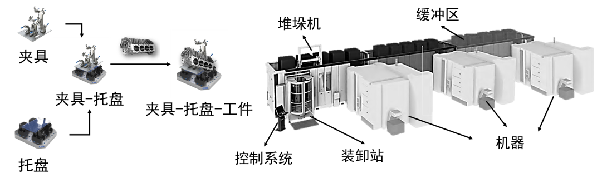
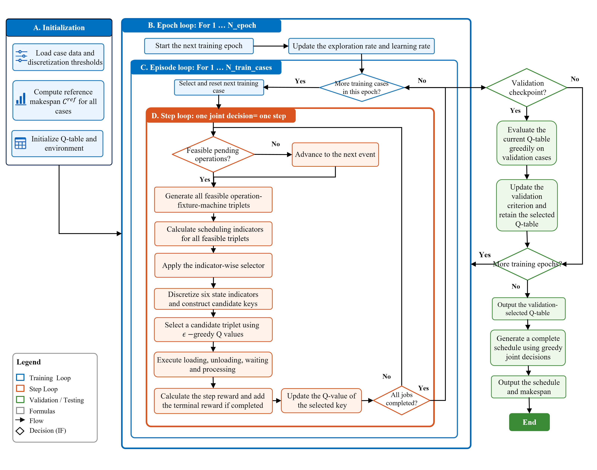
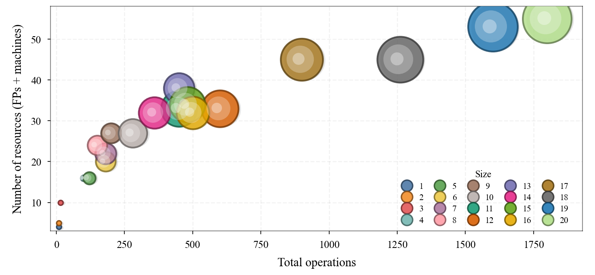
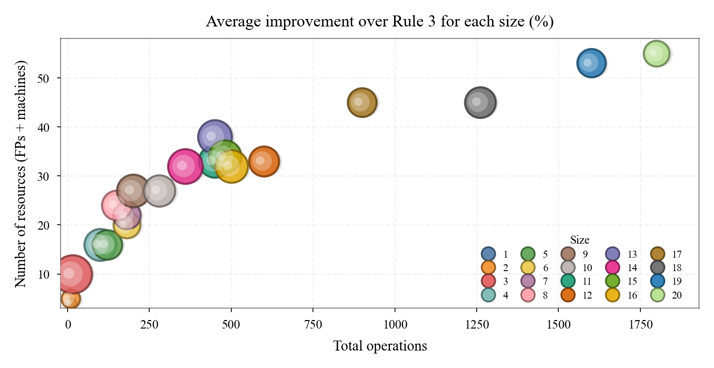
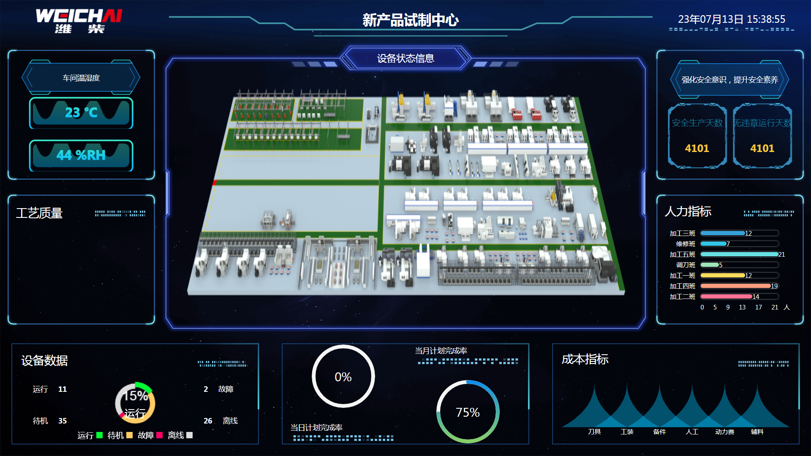

制造模式转型
随着产品定制化程度提高和生命周期缩短，生产模式正从少品种大批量转向多品种小批量。企业因此面临柔性自动化升级难题，而托盘自动化系统（PAS）是重要解决方案之一。
上海交通大学博士研究生，米兰理工大学国家公派双博士项目。
运筹优化 · 复杂系统调度 · 强化学习 · AI 决策01 · 背景与痛点
托盘自动化系统示例 · 视频来自用户提供的 Fastems 参考资料
随着产品定制化程度提高和生命周期缩短，生产模式正从少品种大批量转向多品种小批量。企业因此面临柔性自动化升级难题，而托盘自动化系统（PAS）是重要解决方案之一。
Fastems 对中国托盘自动化应用的调查显示，78% 的受访企业计划在一至三年内升级 PAS。更高的产品多样性和更短的交付窗口，使 PAS 的高效运行成为日益重要的生产管理问题。
工序选择、机器分配、夹具托盘占用、设置站装卸与物料托盘释放相互影响。一个局部选择会改变其他资源的可用时间和后续可行空间，使物理柔性无法自动转化为系统效率。
真正的瓶颈，是如何把系统的物理柔性转化为生产效率。
02 · 研究对象与难点


兼容选择、同步占用、先后衔接、等待与释放必须同时满足。
机器选择会改变夹具占用；夹具选择也会改变机器等待。
资源和工件增加后，可行组合与决策空间迅速扩大。
03 · 研究现状
根据第五篇论文 “RL applications in FJSP and MRFJSP” 文献表归纳。
04 · 两条研究主线
逐步补齐真实 PAS 中的资源与占用关系。
创新：刻画 FP 从装载、等待、加工到卸载的连续占用。
创新：联合处理装卸任务分配、排队与 FP 释放。
创新：描述 MP 可用性与 FP 释放之间的决策耦合。
从每个实例重新计算，走向可复用、可改进的策略。
建立正确性与最优性基准。
规则初始化结合关键路径搜索。
学习可跨订单复用的联合策略。
用反例持续诊断和精化表示。
第一作者成果
机器—夹具托盘联合调度与连续占用建模
Yulu Zhou, Shichang Du*, Andrea Matta
引入有限物料托盘的发动机制造案例
进一步纳入有限设置站与装卸任务
Yulu Zhou, Andrea Matta, Shichang Du*
工序—夹具托盘—机器端到端联合决策
05 · AI 研究重点
强化学习 · End-to-End Q-Learning
候选筛选与三层离散化共同控制状态—动作规模，使相似调度情境能够共享经验；核心是在保留关键决策差异与避免 Q 表过度稀疏之间取得平衡。
用装卸时间、加工时间、工序等待、机器等待、剩余工作量和工序柔性六个离散特征描述每个候选动作。
φₜ(a) = [bˡᵘᵗ, bᵖʳᵒᶜ, bᵒʷ, bᵐʷ, bʳᵉᵐ, bᶠˡᵉˣ]先生成所有可行的工序—夹具托盘—机器组合，再保留兼顾装卸、加工和等待偏好的代表候选，由智能体完成最终选择。
aₜ = (Oᵢⱼ, f, m) ∈ Ãₜ过程项惩罚本次动作造成的部分完工期增长；终止项评价完整调度相对参考方案的改善，并按案例规模归一化。
rₜ = (Cₜᵖ − Cₜ₊₁ᵖ)/Cʳᵉᶠ + Iₜβ(Cʳᵉᶠ − Cₘₐₓ)/Cʳᵉᶠ用即时回报与下一决策点的最佳估计共同更新 Q 值，使一次联合选择能够学习其对后续调度的影响。
Q ← Q + α[rₜ + γ max Q′ − Q]
结果 · 100 个测试案例
总体比较覆盖 GA、TS、SA 与多种规则组合。Gurobi 仅评估最小的 15 个案例，因此不纳入这项完整测试集结论。



在装卸时间占主导的极端场景中，三层离散化会把差异明显的装卸时间映射到同一类别，造成信息损失；智能体平均比 Rule 2 差 3.39%。而在加工主导与资源数量减少场景中，智能体仍保持明显优势。
LLM Agent · Counterexample-driven Learning
Agent 从反事实决策中寻找“当前策略选了什么、换一个动作会怎样”，把错误转化为可证伪的特征假设，再由冻结的实验协议决定淘汰、晋级或结束。
消除有害同键反例，同时保持或改善整体 makespan。
反例、Q-table、训练曲线与验证结果。
LLM 分析原因并提出可证伪的单因素假设。
修改代码和配置，执行测试、训练与验证。
保存反例库、实验注册表和 Git 历史。
反例基本消除，或重新诊断后改进仍不收敛。
在固定发现集运行，并记录全部候选动作。
比较当前所选动作与所有可行替代动作的最终 makespan，生成确认有害反例库 CEk。
若所选动作相对最佳替代动作的归一化 regret ≥ 1%，则记为有害反例；若二者共享同一离散状态键，则说明状态表示发生信息丢失。
分析反例与无害对照，只改变一个表示因素：相对化特征、替换弱信息、补充资源耦合上下文，或降低状态稀疏性。
自动测试与信息泄漏检查通过后提交 Git，确保每个假设可追踪、可回退、可复现。
先判断性能底线是否守住，以及反例率或同键反例是否改善；弱信号再追加一次复核。
系统评估反例率、regret、状态混叠、模型复杂度与 makespan，确认局部修正是否形成整体净改进。
闭环持续到反例基本消除；若重新诊断后仍无稳定改进，则如实保留未解决的泛化边界并停止。
06 · 工业落地
潍柴动力 · 新产品试制车间
车间覆盖 120 余种产品、105 台加工设备，年产约 2.7 万件；机器、夹具托盘、刀具、毛坯等资源相互制约，还要应对设备故障、质量异常与订单变更。
订单、数量与交付期
拆解为可排产的任务
分期检查产能与瓶颈
检查工装、刀具与物料
反馈计划与资源缺口
工艺路线与资源状态
描述多资源约束关系
快速构造可行初始解
迭代优化调度目标
下发可执行生产任务
故障、质量或订单变化
定位受影响任务与资源
保留已完成、撤回未执行
按场景规则局部优化
同步执行并持续反馈

现场结果
经过半年现场验证并投入使用，形成覆盖预排产、静态排产与动态排产的多层级排产系统。
将具体业务规则与通用的多资源建模、智能求解和动态重调度框架分离；通过重新定义资源、状态、约束与评价指标，可进一步迁移到其他复杂调度系统。
07 · 结论
形成可落地、能泛化、会持续学习的智能调度方法，快速响应生产变化，适应不同制造系统与应用场景。
08 · 未来展望
从表格型 Q-learning 走向深度强化学习，研究订单到达、设备故障等动态事件，以及更大规模和连续状态下的联合决策。
逐步接入 APS，从历史数据与数字化环境中的离线验证开始，验证其在真实生产中的稳定性、响应速度与持续收益。